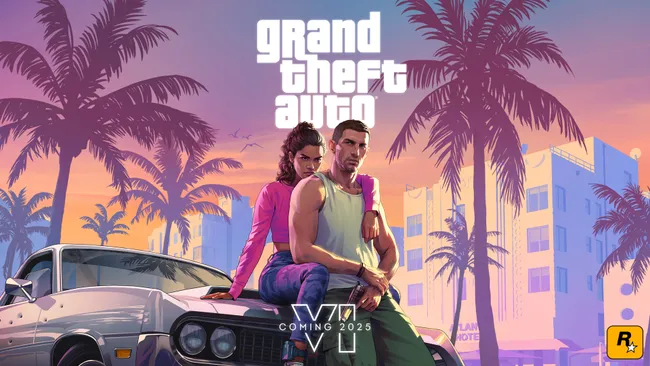

The GTA 6 trailer is here and it has confirmed the Grand Theft Auto 6 location, characters, and release window
GTA 6 is coming in 2025, with Rockstar Games taking us back to the sun-soaked streets of Vice City. The reveal of the first official GTA 6 trailer gave us a pretty spectacular look at Leonida, hinting towards some of the wild sights and sounds that the state will have to offer us.
If you're looking for more insight into the trailer, you'll want to check out our in-depth GTA 6 trailer breakdown. In it, we try to unpick some story details about Lucia – the protagonist leading Grand Theft Auto 6 – as well as get a better sense of the sort of scale which Rockstar is striving for. It's all exceptionally impressive, and there's plenty to dig into. So with that in mind, you'll want to keep on reading to find everything you need to know about GTA 6 ahead of its release next year.
The GTA 6 reveal trailer is here and it is everything that we hoped it would be. While Rockstar had originally set the GTA 6 trailer release date for Tuesday, December 5, a leak pushed the publisher to get the long-awaited first look at the new Grand Theft Auto out into the world a little earlier. The GTA 6 trailer, which you can view above, gives us a first look at the return to Vice City and the new twin-protagonists.
Rockstar has confirmed that the GTA 6 release date is set for 2025. The news arrived as part of the reveal trailer, noting that Grand Theft Auto 6 is set to release TBC 2025 – no further clarification has been posted on when.
Prior to the reveal trailer, internet sleuths had been making some educated guesses. Multiple sources have corroborated a rumor that GTA 6 will release in 2025, which was part of a larger info drop that suggested that Grand Theft Auto 6 would be set in a modern-day Vice City.
Interestingly, Take-Two, the Rockstar owner, continues to imply GTA 6 is out by March 2025 while saying nothing about it. CEO Strauss Zelnick says "we remain confident that we are positioning our business for a significant inflection point in fiscal 2025, which we believe will include new record levels of operating performance." That significant boost to revenue predictions is supposedly due to the GTA 6 launch.
However, there's a new report via Kotaku that suggest Rockstar is worried production on GTA 6 is falling behind, and could impact the 2025 release date. Rockstar has moved all of its employees back to full-time in-office work five days a week, which multiple of its developers have expressed concern about, particularly when it comes to the potential effects on the sequel. Fall 2025 is now looking more realistic than Spring 2025, but we'll have to wait for more news from Rockstar before we can know more officially.
So far, it has been confirmed that GTA 6 will be coming to PS5 and Xbox Series X/S when it arrives. The news came by way of an official press release from Take Two, which states that: "GTA 6 is coming to PlayStation 5 computer entertainment systems and Xbox Series X|S games and entertainment systems in 2025".
As revealed in the official press release, GTA 6 is currently only slated to arrive on the PS5 and Xbox Series X and won't be coming to PS4 or Xbox One when it launches in 2025 - making it a current-gen exclusive.
There's currently no mention of a PC launch, which might suggest it will follow a similar route to some of the previous GTA games that released on consoles first, before arriving on PC at a later date.
We wouldn't hold your breath for a quick PC release follow-up either, as according to a former developer, GTA 6 on PC will likely take a while, with PS5 taking priority as Rockstar focuses on "what sells". That's corroborated by another former developer, who said the GTA 6 PC launch probably won't come for "a long time".
During the official trailer, we were introduced to the protagonists of GTA 6, with a focus on the the first GTA 6 female lead, Lucia. While there's still much we've yet to learn about her as a character, the trailer gives us some hints, with her wearing prison clothing, which tells us she's clearly had some trouble with the law. Not only on that, but Lucia is shown on multiple occasions with an unnamed male character, who looks set to be play a main role in the next entry - while he's been unofficially referred to as both Jason and James in the past, we've not had confirmation on his name. The pair appear to share a bond, or a kind of Bonnie and Clyde-like relationship, and speak of trust as they get stuck into some crime together.
GTA 6 is taking us back to Vice City. While the original game was set in 1986, this new 2025 release is set to take place in what appears to be a modern day setting. Rockstar revealed we'll be heading to the state of Leonida which is "home to the neon-soaked streets of Vice City and beyond". Set to be the "biggest, most immersive evolution of Grand Theft Auto yet", Vice City appears to be a part of a bigger map that will form GTA 6.
The trailer has already given us a glimpse of a Vice City made prettier than ever, with a take on rural Florida that's every bit as chaotic as the real thing. With some familiar spots such as Starfish Island, we'll have to wait and see if we're able to visit old haunts like the Malibu Club, Ocean View Hotel, Little Haiti, remains to be seen.
As we saw in the trailer, it's Fans have already been comparing the new trailer to the locations from the original Vice City, which demonstrates how incredibly detailed the updated take on the location is.
The first GTA 6 announcement came in February 2022, when Rockstar Games snuck out the news that GTA 6 is "well underway" as part of a broader GTA 5 and GTA Online Community Update. With word that Grand Theft Auto 6 is in "active development", Rockstar said: "On behalf of our entire team, we thank you all for your support and cannot wait to step into the future with you!"
In August 2022, Rockstar's parent company Take-Two Interactive reaffirmed that GTA 6 development is "well underway" as part of the company's financial results report. Take-Two CEO Strauss Zelnick made some big promises for what GTA 6 will achieve: "With development of the next entry in the Grand Theft Auto series well underway, the Rockstar Games team is determined to once again set creative benchmarks for the series, our industry, and for all entertainment, just as the label has done with every one of their frontline releases."
There hasn't been any official GTA 6 news since the official announcement in February 2022, but that is classic Rockstar Games. We have, of course, had the massive leak - which you can read about below - and responses to that leak, but otherwise the developer has been pretty quiet on the highly-anticipated sequel.
There was an unprecedented GTA 6 leak on September 18, 2022, which saw dozens of videos and screenshots from an alleged in-development build of the game spread online. Are you wondering whether the GTA 6 leaks are real? Well, Rockstar has since issued a statement confirming the hack: "We recently suffered a network intrusion in which an unauthorized third party illegally accessed and downloaded confidential information from our systems, including early development footage for the next Grand Theft Auto."
"We are extremely disappointed to have any details of our next game shared with you all in this way," the Rockstar statement continues. "We will update everyone again soon and, of course, will properly introduce you to this next game when it's ready. We want to thank everyone for their ongoing support through this situation."
In the 48 hours since the GTA 6 leak first appeared, the GTA Forums have worked to scrub all remnants of the illegally obtained screenshots and videos to avoid being "obliterated by Rockstar". The dedicated GTA 6 reddit has also taken all links, pictures, and videos of the leak offline, and has committed to staying online with one condition: "We will allow discussions related to the leak without attaching the leaks. We don't allow comments that has [sic] download links to the leak."
Since then, Rockstar and parent company Take-Two have spoken out about the leaks. In a recent earnings call, CEO of GTA publisher Take-Two Interactive, Strauss Zelnick said that the leak was "terribly unfortunate", before adding that "we take those sorts of incidents very seriously indeed".
"There's no evidence that any material assets were taken, which is a good thing, and certainly the leak won't have any influence on development or anything of the sort. But it is terribly disappointing, and causes us to be ever more vigilant on matters relating to cybersecurity."
The latest update on all of this is that the teenager accused of massive GTA 6 leak has been deemed psychiatrically unfit for trial. Reuters reports that 18-year-old Arion Kurtaj, a member of the Lapsus$ hacking group has been assessed by psychiatrists who have deemed him unfit to stand trial for himself.
Interestingly, there's one leaked GTA 6 screenshot that is the sole survival of a Rockstar copyright "nuke". Seems like just a single frame has escaped the all-encompassing copyright claims Rockstar has waved across the internet.
In the immediate aftermath of the new GTA 6 leak, there was some concern over how the intrusion would impact ongoing development of the new Grand Theft Auto game. Rockstar has since confirmed in an official statement that the hack will not affect GTA 6 production, or the ongoing security of GTA 5 and GTA Online. "At this time, we do not anticipate any disruption to our live game services nor any long-term effect on the development of our ongoing projects [...] Our work on the next Grand Theft Auto game will continue as planned and we remain as committed as ever to delivering an experience to you, our players, that truly exceeds your expectations."
While the final GTA 6 map is yet to be shown, there are some indicators from the leaked video and screens that indicate a play space that stretches beyond the confines of Vice City. Much in the same way Rockstar expanded upon Los Santos between Grand Theft Auto: San Andreas and GTA 5, a few of the leaked screenshots appear to show all-new areas of Vice City. As you may know, Vice City itself is loosely based on Miami, and there's now speculation that GTA 6 will push further south toward the Everglades (a wetland) and the Florida Keys (a string of tropical islands). Now, the "Gator Keys" were referenced in the original GTA: Vice City as part of a radio broadcast, but the location was never shown in-game. If the screenshots suggest what we think they are, expect the GTA 6 map to contain a mixture of environment types.
Interestingly, fans are convinced that the GTA 6 map will be much larger than that of GTA 5. Using leaked GTA 6 coordinates, the GTA 6 subreddit fans are trying to map out the map itself, and later started stitching GTA 6's map together using Google Earth and Paint. Clever folks.
As Rockstar is yet to release an unvarnished GTA 6 gameplay trailer, it's difficult for us to say with certainty how this new game will play and how it will innovate on Grand Theft Auto 5. However, it's clear from the early development footage which leaked out that Rockstar is at least investigating and playtesting some new mechanics. For example, it appears that a new series of stealth mechanics are being introduced – with footage depicting characters crawling while prone, and even carrying bodies.
Additionally, the weapon wheel – which was overhauled for GTA 5 – is returning in some capacity, and the leaked footage suggests that Rockstar is introducing new health buff items such as painkillers. We can also see that the Five Star 'Wanted' system is returning, and that the VCPD have improved AI routines for tracking Jason and Lucia after you get on their radar.